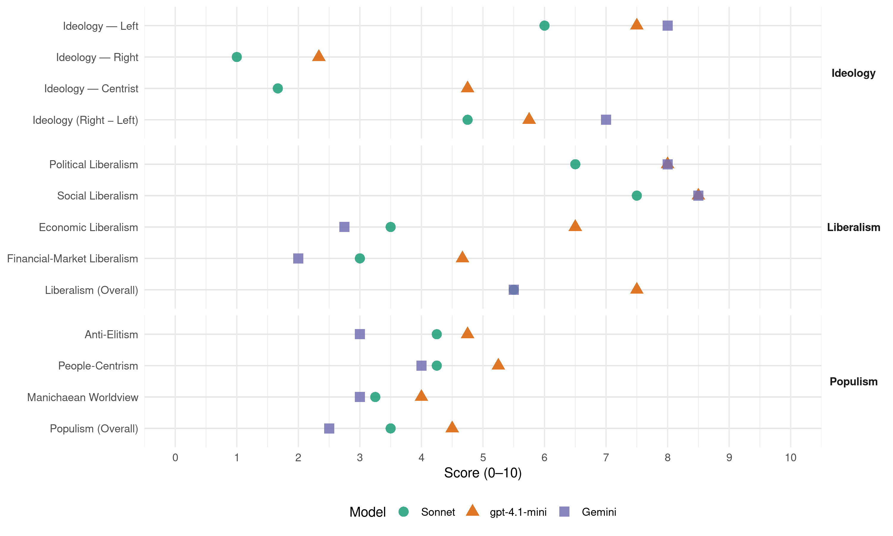

PS (Belgium, 2010)
manifesto_id 21322_201006
Get full text: This site shows derived annotations and short verbatim quotes only. The full manifesto text is © Manifesto Project / WZB — obtain it via manifesto-project.wzb.eu using the manifesto_id above.
Headline scores
| Dimension | Sonnet | gpt-4.1-mini | Gemini |
|---|---|---|---|
| Populism (Overall) | 3.5 | 4.5 | 2.5 |
| Anti-Elitism | 4.2 | 4.8 | 3.0 |
| People-Centrism | 4.2 | 5.2 | 4.0 |
| Manichaean Worldview | 3.2 | 4.0 | 3.0 |
| Ideology (Right − Left) | 4.8 | 5.8 | 7.0 |
| Liberalism (Overall) | 5.5 | 7.5 | 5.5 |
| Political Liberalism | 6.5 | 8.0 | 8.0 |
| Social Liberalism | 7.5 | 8.5 | 8.5 |
| Economic Liberalism | 3.5 | 6.5 | 2.8 |
| Financial-Market Liberalism | 3.0 | 4.7 | 2.0 |
Evidence per dimension
Economic Liberalism
Gemini · score 3.0 · verified · chunk 1
“dérives du marché et de l’hyperconsommation”
une politique qui préserve les ménages des dérives du marché et de l’hyperconsommation
Gemini · score 3.0 · verified · chunk 2
“système de blocage des loyers”
le cas échéant, la mise en œuvre d’un système de blocage des loyers dans les zones
Gemini · score 2.0 · verified · chunk 3
“opposé à la libéralisation frénétique”
Le PS est donc fondamentalement opposé à la libéralisation frénétique des services publics que nous proposent
Gemini · score 3.0 · verified · chunk 4
“effets désastreux : baisse de la qualité du service”
ces expériences de libéralisation ou de privatisation ont provoqué des effets désastreux : baisse de la qualité du service, instabilité voire augmentation des prix
gpt-4.1-mini · score 6.0 · verified · chunk 1
“restaurer la primauté de l’économie réelle, par un contrôle sérieux de la finance”
Le PS veut avant toute chose restaurer la primauté de l’économie réelle, par un contrôle sérieux de la finance et par la restauration du rôle des pouvoirs publics.
gpt-4.1-mini · score 7.0 · verified · chunk 2
“le PS veut une économie dynamique, diversifiée, générant des richesses et porteuse d’emplois durables”
Le PS veut une économie dynamique, diversifiée, générant des richesses et porteuse d’emplois durables. C’est pourquoi nous voulons simplifier le travail des acteurs de l’économie réelle dans la création et la gestion de leur entreprise.
gpt-4.1-mini · score 6.0 · verified · chunk 3
“stimuler les investissements dans l’infrastructure de réseaux de communications électroniques”
de stimuler les investissements dans l’infrastructure de réseaux de communications électroniques afin d’attirer de nouveaux investisseurs pour offrir des services de qualité et de veiller, à travers l’adaptation de la réglementation, à assurer une concurrence équitable entre les acteurs du secteur ;
gpt-4.1-mini · score 7.0 · verified · chunk 4
“la fiscalité doit permettre le renforcement de notre sécurité sociale”
Dans un contexte budgétaire difficile provoqué par la crise financière et économique, la fiscalité doit permettre le renforcement de notre sécurité sociale. Elle doit aussi être un outil de la politique économique de soutien à l’emploi, à l’investissement et à l’innovation (recherche et développement).
Sonnet · score 3.0 · verified · chunk 1
“préserve les ménages des dérives du marché”
une politique qui garantit les pensions, qui est solidaire de ceux qui souffrent, une société qui préserve les ménages des dérives du marché et de l’hyperconsommation
Sonnet · score 4.0 · verified · chunk 2
“mettre sous contrôle les prix des produits de première nécessité”
C’est pourquoi le PS veut mettre sous contrôle les prix des produits de première nécessité afin qu’ils restent accessibles pour tous
Sonnet · score 3.0 · verified · chunk 3
“moratoire sur les processus de libéralisation”
le PS demande : un moratoire sur les processus de libéralisation actuels et une évaluation sociale des processus de libéralisation
Sonnet · score 4.0 · verified · chunk 4
“fiscalité doit d’abord être un outil de redistribution”
La fiscalité doit d’abord être un outil de redistribution des richesses, par le financement optimal de nos services publics et de notre sécurité sociale
Financial-Market Liberalism
Gemini · score 2.0 · verified · chunk 1
“contrôle sérieux de la finance”
restaurer la primauté de l’économie réelle, par un contrôle sérieux de la finance et par la restauration
Gemini · score 2.0 · verified · chunk 2
“taxe sur les transactions financières”
l’introduction d’une taxe sur les transactions financières de 0,05%, qui permettra
Gemini · score 2.0 · verified · chunk 4
“contrôle du monde de la finance”
à l’heure où la spéculation financière menace la stabilité de plusieurs pays européens, le contrôle du monde de la finance apparaît comme un préalable
gpt-4.1-mini · score 4.0 · verified · chunk 1
“financement des protections sociales, l’activité économique permet l’élévation”
Par la répartition des richesses produites et le financement des protections sociales, l’activité économique permet l’élévation du niveau de vie et du bienêtre des populations.
gpt-4.1-mini · score 4.0 · verified · chunk 2
“de confier au plus vite l’ensemble du contrôle prudentiel des banques et autres opérateurs financiers à la Banque nationale”
Le PS propose : Au niveau belge : de confier au plus vite l’ensemble du contrôle prudentiel des banques et autres opérateurs financiers à la Banque nationale ; de rendre le plus vite possible opérationnelle la mise en place d’une Agence pour la transparence financière chargée de protéger les emprunteurs, les investisseurs, les épargnants et les assurés ; de mettre hors marché tout produit financier qui ne répondrait pas à certains critères en termes d’information sur les risques et sur le rendement ; de renforcer le contrôle de la gestion des risques et de l’évolution de la solvabilité, au niveau des banques ; d’instaurer une séparation entre les banques de dépôts et les banques d’investissement.
gpt-4.1-mini · score 6.0 · verified · chunk 4
“la lutte contre la grande fraude fiscale a rendu un rapport”
Une Commission d’enquête parlementaire sur la grande fraude fiscale a rendu un rapport il y a déjà un an, soit exactement le 14 mai 2009. Ce rapport comportait 108 recommandations adoptées à l’unanimité visant à pallier les déficits constatés dans la lutte contre la fraude fiscale en Belgique.
Sonnet · score 2.0 · verified · chunk 1
“contrôle sérieux de la finance”
Le PS veut avant toute chose restaurer la primauté de l’économie réelle, par un contrôle sérieux de la finance et par la restauration du rôle des pouvoirs publics
Sonnet · score 3.0 · verified · chunk 2
“taxe sur les transactions financières de 0,05%”
l’introduction d’une taxe sur les transactions financières de 0,05%, qui permettra non seulement de combattre la spéculation destructrice
Sonnet · score 4.0 · verified · chunk 3
“transparence complète de la rémunération”
d’instaurer une transparence complète de la rémunération (dans tous ses aspects, y compris les « incentives » et autres avantages en nature)
Sonnet · score 3.0 · verified · chunk 4
“contrôle du monde de la finance apparaît comme un préalable”
la spéculation financière menace la stabilité de plusieurs pays européens, le contrôle du monde de la finance apparaît comme un préalable indispensable
Political Liberalism
Gemini · score 8.0 · verified · chunk 1
“garantir un accès effectif à la justice”
moyens nécessaires pour garantir un accès effectif à la justice et traiter les dossiers sans retard
Gemini · score 8.0 · verified · chunk 2
“garanti par l’article 23 de la Constitution”
faire du droit au logement, garanti par l’article 23 de la Constitution, une réalité pour tous.
Gemini · score 8.0 · verified · chunk 3
“respect des droits de l’Homme”
terrorisme et le respect des droits de l’Homme et des libertés fondamentales ;
Gemini · score 8.0 · verified · chunk 4
“respect de l’Etat de droit”
le respect de l’Etat de droit et la mise en œuvre des Droits de l’Homme et des libertés fondamentales
gpt-4.1-mini · score 8.0 · verified · chunk 1
“sécurité sociale, agissant à la fois comme un stabilisateur économique”
C’est pourtant grâce à notre système de sécurité sociale, agissant à la fois comme un stabilisateur économique et comme un frein à la précarisation de la population, que nous avons pu jusqu’ici mieux résister aux effets de la crise.
gpt-4.1-mini · score 8.0 · verified · chunk 2
“le PS veut maintenir des services publics de qualité”
Pour le PS, il est primordial de maintenir des services publics de qualité. Il est donc inacceptable de revoir au rabais les missions de service universel qui permettent aux citoyens d’avoir accès sur tout le territoire belge à des services à des prix abordables.
gpt-4.1-mini · score 8.0 · verified · chunk 3
“la justice doit être plus proche des citoyens”
La justice doit être plus proche des citoyens. Le PS propose notamment : d’élargir les conditions d’accès à l’aide juridique ; de garantir sa qualité via une rémunération adéquate des avocats chargés de l’assurer ;
gpt-4.1-mini · score 8.0 · verified · chunk 4
“le respect de l’Etat de droit et la mise en œuvre des Droits de l’Homme”
Il est fondamental pour le PS de réaffirmer une série de principes: le respect de l’Etat de droit et la mise en œuvre des Droits de l’Homme et des libertés fondamentales ; la séparation de l’Eglise et de l’Etat et la primauté du droit civil sur les traditions ou prescrits religieux.
Sonnet · score 6.0 · verified · chunk 1
“renforcer la démocratie sociale”
de lutter contre les phénomènes de sousdéclaration des accidents du travail, notamment en renforçant la démocratie sociale
Sonnet · score 6.0 · verified · chunk 2
“autorité de contrôle indépendante”
de créer une autorité de contrôle indépendante, chargée de veiller au respect des procédures aériennes d’application à Bruxelles-National, avec pouvoir de sanction
Sonnet · score 7.0 · verified · chunk 3
“droits fondamentaux des personnes étrangères”
les procédures d’éloignement doivent se faire dans des conditions respectant les droits fondamentaux des personnes étrangères
Sonnet · score 7.0 · verified · chunk 4
“renforcer notre démocratie”
il est essentiel de renforcer notre démocratie. 30.2.1. RENFORCER LE DROIT DE VOTE COMME PILIER FONDAMENTAL DE LA DEMOCRATIE
Liberalism (Overall)
Gemini · score 5.0 · verified · chunk 1
“l’imposture d’une idéologie libérale”
dévoile toute l’imposture d’une idéologie libérale trop longtemps dominante
Gemini · score 5.0 · verified · chunk 2
“taxe sur les transactions financières”
l’introduction d’une taxe sur les transactions financières de 0,05%, qui permettra
Gemini · score 6.0 · verified · chunk 3
“combattre tous les types de discrimination”
DISCRIMINATIONS 21.1. COMBATTRE TOUS LES TYPES DE DISCRIMINATION Pour le PS, chaque personne doit
Gemini · score 6.0 · verified · chunk 4
“respect de l’Etat de droit”
le respect de l’Etat de droit et la mise en œuvre des Droits de l’Homme et des libertés fondamentales
gpt-4.1-mini · score 7.0 · verified · chunk 1
“système de sécurité sociale, agissant à la fois comme un stabilisateur économique”
C’est pourtant grâce à notre système de sécurité sociale, agissant à la fois comme un stabilisateur économique et comme un frein à la précarisation de la population, que nous avons pu jusqu’ici mieux résister aux effets de la crise.
gpt-4.1-mini · score 7.0 · verified · chunk 2
“le PS veut une économie dynamique, diversifiée, générant des richesses et porteuse d’emplois durables”
Le PS veut une économie dynamique, diversifiée, générant des richesses et porteuse d’emplois durables. C’est pourquoi nous voulons simplifier le travail des acteurs de l’économie réelle dans la création et la gestion de leur entreprise.
gpt-4.1-mini · score 8.0 · verified · chunk 3
“la justice doit être plus proche des citoyens”
La justice doit être plus proche des citoyens. Le PS propose notamment : d’élargir les conditions d’accès à l’aide juridique ; de garantir sa qualité via une rémunération adéquate des avocats chargés de l’assurer ;
gpt-4.1-mini · score 8.0 · verified · chunk 4
“le respect de l’Etat de droit et la mise en œuvre des Droits de l’Homme”
Il est fondamental pour le PS de réaffirmer une série de principes: le respect de l’Etat de droit et la mise en œuvre des Droits de l’Homme et des libertés fondamentales ; la séparation de l’Eglise et de l’Etat et la primauté du droit civil sur les traditions ou prescrits religieux.
Sonnet · score 5.0 · verified · chunk 1
“absence de régulation sérieuse des marchés”
La financiarisation massive de l’économie, facilitée par sa globalisation mondiale et l’absence de régulation sérieuse des marchés, a eu des conséquences désastreuses
Sonnet · score 5.0 · verified · chunk 2
“régulation sérieuse de la finance”
9. UN RETOUR A L’ECONOMIE REELLE PAR UNE REGULATION SERIEUSE DE LA FINANCE
Sonnet · score 6.0 · verified · chunk 3
“chaque personne doit être traitée sans discrimination”
Pour le PS, chaque personne doit être traitée sans discrimination, quels que soient ses origines ou son identité
Sonnet · score 6.0 · verified · chunk 4
“respect de l’Etat de droit et la mise en œuvre des Droits de l’Homme”
le respect de l’Etat de droit et la mise en œuvre des Droits de l’Homme et des libertés fondamentales ; la séparation de l’Eglise et de l’Etat
Anti-Elitism
Gemini · score 3.0 · verified · chunk 2
“idéologie libérale aveugle”
mythe de l’autorégulation, qui procède d’une idéologie libérale aveugle, s’avère dangereux pour l’humanité.
Gemini · score 3.0 · verified · chunk 4
“manœuvres politiciennes de la famille libérale”
Fin avril, les manœuvres politiciennes de la famille libérale flamande et son absence de sens de l’Etat ont plongé nos concitoyens
gpt-4.1-mini · score 7.0 · verified · chunk 1
“idéologie libérale trop longtemps dominante”
Si cette crise, et les drames sociaux qu’elle charrie en cascade, dévoile toute l’imposture d’une idéologie libérale trop longtemps dominante, elle est aussi le révélateur concret de la valeur et de l’utilité du modèle social défendu par le PS.
gpt-4.1-mini · score 7.0 · verified · chunk 2
“la crise menace la sécurité d’existence de nombreux citoyens”
La crise menace la sécurité d’existence de nombreux citoyens, accroissant les risques de déclassement social. Dans ce contexte, le PS, est particulièrement attentif au pouvoir d’achat des personnes à faibles revenus et à la lutte contre la précarité.
gpt-4.1-mini · score 2.0 · verified · chunk 3
“l’Union européenne, dominée par les partis conservateurs, a imposé une libéralisation”
L’Union européenne, dominée par les partis conservateurs, a imposé une libéralisation de nombreux secteurs : chemin de fer, gaz et électricité, services postaux… En réalité, ces expériences de libéralisation ou de privatisation ont provoqué des effets désastreux
gpt-4.1-mini · score 3.0 · verified · chunk 4
“les manœuvres politiciennes de la famille libérale flamande”
Fin avril, les manœuvres politiciennes de la famille libérale flamande et son absence de sens de l’Etat ont plongé nos concitoyens dans une nouvelle crise politique menaçant la stabilité même de nos institutions.
Sonnet · score 4.0 · verified · chunk 1
“logique ultralibérale irresponsable de maximisation des profits”
la crise financière, provoquée par une logique ultralibérale irresponsable de maximisation des profits, a frappé durement le monde entier
Sonnet · score 6.0 · verified · chunk 2
“mythe de l’autorégulation, qui procède d’une idéologie libérale aveugle”
Cette crise a montré à quel point le mythe de l’autorégulation, qui procède d’une idéologie libérale aveugle, s’avère dangereux pour l’humanité.
Sonnet · score 3.0 · verified · chunk 3
“dominée par les partis conservateurs”
L’Union européenne, dominée par les partis conservateurs, a imposé une libéralisation de nombreux secteurs
Sonnet · score 4.0 · verified · chunk 4
“la famille libérale flamande et son absence de sens de l’Etat”
les manœuvres politiciennes de la famille libérale flamande et son absence de sens de l’Etat ont plongé nos concitoyens dans une nouvelle crise politique
Ideology — Centrist
gpt-4.1-mini · score 5.0 · verified · chunk 1
“concertation sociale forte, reposant sur un dialogue social constant”
Pour lutter contre la crise et assurer une relance de l’économie fondée sur un nouveau modèle de développement écosolidaire, le PS : réaffirme l’impérieuse nécessité d’une concertation sociale forte, reposant sur un dialogue social constant ; à cet égard, pour les futurs accords interprofessionnels, il portera une attention toute particulière à la réalisation de progrès significatifs vers un nouveau modèle de développement économique écosolidaire ; demande une coopération renforcée entre l’Etat fédéral et les Régions dans le but premier de créer de l’emploi.
gpt-4.1-mini · score 5.0 · verified · chunk 2
“le PS veut mettre les transports publics, et le train en particulier, au cœur de la mobilité des citoyens”
Le PS veut mettre les transports publics, et le train en particulier, au cœur de la mobilité des citoyens et des entreprises. Cela nécessite de renforcer la sécurité des trains et des gares, leur confort, leur accessibilité à tous à un prix abordable ainsi que la ponctualité et la fréquence (voir chapitre SNCB/services publics).
gpt-4.1-mini · score 4.0 · verified · chunk 3
“offrir une réelle liberté de mouvement à tous les citoyens”
Pour le PS, il s’agit d’offrir une réelle liberté de mouvement à tous les citoyens, en réduisant la congestion, tout en favorisant les modes de déplacements les plus respectueux de l’environnement.
gpt-4.1-mini · score 5.0 · verified · chunk 4
“le PS milite pour construire une société qui concilie de manière harmonieuse solidarité, liberté, sécurité”
Depuis 125 ans, le PS milite pour construire une société qui concilie de manière harmonieuse solidarité, liberté, sécurité, autonomie et respect des personnes dans des espaces de prospérité à tous les niveaux de pouvoir.
Sonnet · score 2.0 · verified · chunk 2
“approche du PS se veut raisonnable et équilibrée”
La protection du consommateur est au cœur des préoccupations du PS. L’approche du PS se veut raisonnable et équilibrée.
Sonnet · score 1.0 · verified · chunk 3
“approche transversale, dans une logique”
Tous ces défis nécessitent une approche transversale, dans une logique d’écologie sociale
Sonnet · score 2.0 · verified · chunk 4
“solution équilibrée et négociée aux problèmes institutionnels”
rendra plus compliquée encore la recherche d’une solution équilibrée et négociée aux problèmes institutionnels
Ideology — Left
Gemini · score 8.0 · verified · chunk 2
“privatisation des bénéfices et une socialisation des pertes”
les socialistes refusent une privatisation des bénéfices et une socialisation des pertes car au final, ce sont les citoyens
Gemini · score 8.0 · verified · chunk 4
“outil de redistribution des richesses”
La fiscalité doit d’abord être un outil de redistribution des richesses, par le financement optimal de nos services publics
gpt-4.1-mini · score 8.0 · verified · chunk 1
“répartition des richesses produites et le financement des protections sociales”
Par la répartition des richesses produites et le financement des protections sociales, l’activité économique permet l’élévation du niveau de vie et du bienêtre des populations.
gpt-4.1-mini · score 8.0 · verified · chunk 2
“le PS, est particulièrement attentif au pouvoir d’achat des personnes à faibles revenus et à la lutte contre la précarité”
La crise menace la sécurité d’existence de nombreux citoyens, accroissant les risques de déclassement social. Dans ce contexte, le PS, est particulièrement attentif au pouvoir d’achat des personnes à faibles revenus et à la lutte contre la précarité.
gpt-4.1-mini · score 7.0 · verified · chunk 3
“le droit de la concurrence et les règles du marché intérieur ne peuvent se substituer aux intérêts de l’ensemble des citoyens”
Il faut aujourd’hui déconstruire ce mythe selon lequel la libéralisation profiterait au consommateur. Pour le PS, le droit de la concurrence et les règles du marché intérieur ne peuvent se substituer aux intérêts de l’ensemble des citoyens pas plus que la loi du marché ne peut supplanter la légitimité et le choix politique.
gpt-4.1-mini · score 7.0 · verified · chunk 4
“la fiscalité doit d’abord être un outil de redistribution des richesses”
Le PS veut une fiscalité juste pour le bienêtre de tous. La fiscalité doit d’abord être un outil de redistribution des richesses, par le financement optimal de nos services publics et de notre sécurité sociale.
Sonnet · score 6.0 · verified · chunk 1
“inégale répartition des richesses produites”
force est de constater l’inégale répartition des richesses produites et le déséquilibre qui existe entre les revenus du travail et du capital
Sonnet · score 7.0 · verified · chunk 2
“relèvement progressif du revenu d’intégration sociale”
poursuivre le relèvement progressif du revenu d’intégration sociale et des allocations les plus basses pour atteindre le seuil de pauvreté
Sonnet · score 5.0 · verified · chunk 3
“libéralisation frénétique des services publics”
le PS est donc fondamentalement opposé à la libéralisation frénétique des services publics que nous proposent actuellement les instances européennes
Sonnet · score 6.0 · verified · chunk 4
“revenus du capital doivent mieux contribuer à la redistribution”
les revenus du capital doivent mieux contribuer à la redistribution des richesses par un meilleur financement de la sécurité sociale
Ideology (Right − Left)
Gemini · score 7.0 · verified · chunk 2
“privatisation des bénéfices et une socialisation des pertes”
les socialistes refusent une privatisation des bénéfices et une socialisation des pertes car au final, ce sont les citoyens
Gemini · score 7.0 · verified · chunk 4
“outil de redistribution des richesses”
La fiscalité doit d’abord être un outil de redistribution des richesses, par le financement optimal de nos services publics
gpt-4.1-mini · score 7.0 · verified · chunk 1
“répartition des richesses produites et le financement des protections sociales”
Par la répartition des richesses produites et le financement des protections sociales, l’activité économique permet l’élévation du niveau de vie et du bienêtre des populations.
gpt-4.1-mini · score 6.0 · verified · chunk 2
“le PS, est particulièrement attentif au pouvoir d’achat des personnes à faibles revenus et à la lutte contre la précarité”
La crise menace la sécurité d’existence de nombreux citoyens, accroissant les risques de déclassement social. Dans ce contexte, le PS, est particulièrement attentif au pouvoir d’achat des personnes à faibles revenus et à la lutte contre la précarité.
gpt-4.1-mini · score 5.0 · verified · chunk 3
“le droit de la concurrence et les règles du marché intérieur ne peuvent se substituer aux intérêts de l’ensemble des citoyens”
Il faut aujourd’hui déconstruire ce mythe selon lequel la libéralisation profiterait au consommateur. Pour le PS, le droit de la concurrence et les règles du marché intérieur ne peuvent se substituer aux intérêts de l’ensemble des citoyens pas plus que la loi du marché ne peut supplanter la légitimité et le choix politique.
gpt-4.1-mini · score 5.0 · verified · chunk 4
“le PS milite pour construire une société qui concilie de manière harmonieuse solidarité, liberté, sécurité”
Depuis 125 ans, le PS milite pour construire une société qui concilie de manière harmonieuse solidarité, liberté, sécurité, autonomie et respect des personnes dans des espaces de prospérité à tous les niveaux de pouvoir.
Sonnet · score 5.0 · verified · chunk 1
“inégale répartition des richesses produites”
force est de constater l’inégale répartition des richesses produites et le déséquilibre qui existe entre les revenus du travail et du capital
Sonnet · score 6.0 · verified · chunk 2
“contrôle strict du monde de la finance”
Le contrôle strict du monde de la finance est un préalable indispensable à toute sortie durable de la crise
Sonnet · score 4.0 · verified · chunk 3
“opposé à la libéralisation frénétique”
le PS est donc fondamentalement opposé à la libéralisation frénétique des services publics
Sonnet · score 4.0 · verified · chunk 4
“fiscalité doit d’abord être un outil de redistribution des richesses”
La fiscalité doit d’abord être un outil de redistribution des richesses, par le financement optimal de nos services publics
Ideology — Right
gpt-4.1-mini · score 3.0 · verified · chunk 2
“l’exemple récent de la Grèce, affaiblie par des spéculateurs tapis dans l’ombre des paradis fiscaux”
Cette crise a montré à quel point le mythe de l’autorégulation, qui procède d’une idéologie libérale aveugle, s’avère dangereux pour l’humanité. L’exemple récent de la Grèce, affaiblie par des spéculateurs tapis dans l’ombre des paradis fiscaux, montre tout le chemin qui reste à parcourir malgré les discours tenus lors des sommets internationaux.
gpt-4.1-mini · score 2.0 · verified · chunk 3
“la doctrine de l’immigrationzéro est un leurre qui nie la réalité des peuples en mouvement”
La doctrine de l’immigrationzéro est un leurre qui nie la réalité des peuples en mouvement et attise les comportements xénophobes. Le PS veut une approche humaine et progressiste de la question des migrations et une politique respectueuse des droits des migrants.
gpt-4.1-mini · score 2.0 · verified · chunk 4
“les droits des francophones de la périphérie bruxelloise et des Fourons soient renforcés”
le PS demande notamment que les droits des francophones de la périphérie bruxelloise et des Fourons soient renforcés afin de les préserver de toute tracasserie et vexation communautaires.
Sonnet · score 1.0 · verified · chunk 2
“visa scientifique”
activer le « visa scientifique » permettant de simplifier les procédures de visa pour les chercheurs étrangers qui viennent travailler en Belgique
Sonnet · score 1.0 · verified · chunk 3
“doctrine de l’immigrationzéro est un leurre”
La doctrine de l’immigrationzéro est un leurre qui nie la réalité des peuples en mouvement
Sonnet · score 1.0 · verified · chunk 4
“droits des francophones de la périphérie bruxelloise”
les droits des francophones de la périphérie bruxelloise et des Fourons soient renforcés afin de les préserver de toute tracasserie
Manichaean Worldview
Gemini · score 3.0 · verified · chunk 2
“spéculateurs tapis dans l’ombre”
l’exemple récent de la Grèce, affaiblie par des spéculateurs tapis dans l’ombre des paradis fiscaux
gpt-4.1-mini · score 6.0 · verified · chunk 1
“imposture d’une idéologie libérale trop longtemps dominante”
Si cette crise, et les drames sociaux qu’elle charrie en cascade, dévoile toute l’imposture d’une idéologie libérale trop longtemps dominante, elle est aussi le révélateur concret de la valeur et de l’utilité du modèle social défendu par le PS.
gpt-4.1-mini · score 5.0 · mixed · chunk 2
“le mythe de l’autorégulation, qui procède d’une idéologie libérale aveugle”
Cette crise a montré à quel point le mythe de l’autorégulation, qui procède d’une idéologie libérale aveugle, s’avère dangereux pour l’humanité. L’exemple récent de la Grèce, affaiblie par des spéculateurs tapis dans l’ombre des paradis fiscaux, montre tout le chemin qui reste à parcourir malgré les discours tenus lors des sommets internationaux.
gpt-4.1-mini · score 3.0 · verified · chunk 3
“le mythe selon lequel la libéralisation profiterait au consommateur”
Il faut aujourd’hui déconstruire ce mythe selon lequel la libéralisation profiterait au consommateur. Pour le PS, le droit de la concurrence et les règles du marché intérieur ne peuvent se substituer aux intérêts de l’ensemble des citoyens
gpt-4.1-mini · score 3.0 · verified · chunk 4
“risque de renforcer les extrémistes des deux côtés de la frontière linguistique”
la crise provoquée par les libéraux flamands risque de renforcer les extrémistes des deux côtés de la frontière linguistique. Ce qui rendra plus compliquée encore la recherche d’une solution équilibrée et négociée aux problèmes institutionnels.
Sonnet · score 3.0 · verified · chunk 1
“imposture d’une idéologie libérale trop longtemps dominante”
cette crise dévoile toute l’imposture d’une idéologie libérale trop longtemps dominante, elle est aussi le révélateur concret de la valeur et de l’utilité du modèle social
Sonnet · score 5.0 · verified · chunk 2
“spéculateurs tapis dans l’ombre des paradis fiscaux”
L’exemple récent de la Grèce, affaiblie par des spéculateurs tapis dans l’ombre des paradis fiscaux, montre tout le chemin qui reste à parcourir
Sonnet · score 2.0 · verified · chunk 3
“effets désastreux”
ces expériences de libéralisation ou de privatisation ont provoqué des effets désastreux : baisse de la qualité
Sonnet · score 3.0 · verified · chunk 4
“L’enlisement ne profite qu’à ceux qui veulent démanteler”
L’enlisement dans lequel nous a plongé la famille libérale ne profite qu’à ceux qui veulent démanteler la solidarité interpersonnelle
People-Centrism
Gemini · score 4.0 · verified · chunk 2
“répondre aux besoins des gens”
L’économie doit répondre aux besoins des gens, en améliorant leur niveau de vie
Gemini · score 4.0 · verified · chunk 4
“bienêtre pour le plus grand nombre”
ce modèle de société est le plus à même de générer du bienêtre pour le plus grand nombre, des relations sociales apaisées
gpt-4.1-mini · score 6.0 · verified · chunk 1
“le pouvoir d’achat des gens”
Le PS veut une politique qui valorise le travail, qui soutient l’emploi, renforce le pouvoir d’achat des gens, qui répond aux difficultés rencontrées par les familles, une politique qui garantit les pensions, qui est solidaire de ceux qui souffrent, une société qui préserve les ménages des dérives du marché et de l’hyperconsommation.
gpt-4.1-mini · score 6.0 · verified · chunk 2
“le PS veut également assurer l’accès aux droits fondamentaux des personnes précarisées”
Le PS veut également assurer l’accès aux droits fondamentaux des personnes précarisées, en particulier dans trois domaines qui pèsent lourdement sur le budget des ménages à faible revenus : créer un fonds de garantie locative qui aiderait les locataires qui ne peuvent payer leur caution et développer l’habitat solidaire
gpt-4.1-mini · score 5.0 · verified · chunk 3
“offrir une réelle liberté de mouvement à tous les citoyens”
Pour le PS, il s’agit d’offrir une réelle liberté de mouvement à tous les citoyens, en réduisant la congestion, tout en favorisant les modes de déplacements les plus respectueux de l’environnement.
gpt-4.1-mini · score 4.0 · verified · chunk 4
“le PS milite pour construire une société qui concilie de manière harmonieuse solidarité, liberté, sécurité”
Depuis 125 ans, le PS milite pour construire une société qui concilie de manière harmonieuse solidarité, liberté, sécurité, autonomie et respect des personnes dans des espaces de prospérité à tous les niveaux de pouvoir.
Sonnet · score 4.0 · verified · chunk 1
“renforcer le pouvoir d’achat des gens”
une politique qui valorise le travail, qui soutient l’emploi, renforce le pouvoir d’achat des gens, qui répond aux difficultés rencontrées par les familles
Sonnet · score 5.0 · verified · chunk 2
“L’économie doit répondre aux besoins des gens”
L’économie doit répondre aux besoins des gens, en améliorant leur niveau de vie et leur bien-être.
Sonnet · score 4.0 · verified · chunk 3
“offrir une réelle liberté de mouvement à tous les citoyens”
Pour le PS, il s’agit d’offrir une réelle liberté de mouvement à tous les citoyens, en réduisant la congestion
Sonnet · score 4.0 · verified · chunk 4
“le bienêtre pour le plus grand nombre”
ce modèle de société est le plus à même de générer du bienêtre pour le plus grand nombre, des relations sociales apaisées
Populism (Overall)
Gemini · score 3.0 · verified · chunk 2
“idéologie libérale aveugle”
mythe de l’autorégulation, qui procède d’une idéologie libérale aveugle, s’avère dangereux pour l’humanité.
Gemini · score 2.0 · verified · chunk 4
“manœuvres politiciennes de la famille libérale”
Fin avril, les manœuvres politiciennes de la famille libérale flamande et son absence de sens de l’Etat ont plongé nos concitoyens
gpt-4.1-mini · score 6.0 · verified · chunk 1
“idéologie libérale trop longtemps dominante”
Si cette crise, et les drames sociaux qu’elle charrie en cascade, dévoile toute l’imposture d’une idéologie libérale trop longtemps dominante, elle est aussi le révélateur concret de la valeur et de l’utilité du modèle social défendu par le PS.
gpt-4.1-mini · score 6.0 · verified · chunk 2
“la crise menace la sécurité d’existence de nombreux citoyens”
La crise menace la sécurité d’existence de nombreux citoyens, accroissant les risques de déclassement social. Dans ce contexte, le PS, est particulièrement attentif au pouvoir d’achat des personnes à faibles revenus et à la lutte contre la précarité.
gpt-4.1-mini · score 3.0 · verified · chunk 3
“l’Union européenne, dominée par les partis conservateurs, a imposé une libéralisation”
L’Union européenne, dominée par les partis conservateurs, a imposé une libéralisation de nombreux secteurs : chemin de fer, gaz et électricité, services postaux… En réalité, ces expériences de libéralisation ou de privatisation ont provoqué des effets désastreux
gpt-4.1-mini · score 3.0 · verified · chunk 4
“les manœuvres politiciennes de la famille libérale flamande”
Fin avril, les manœuvres politiciennes de la famille libérale flamande et son absence de sens de l’Etat ont plongé nos concitoyens dans une nouvelle crise politique menaçant la stabilité même de nos institutions.
Sonnet · score 3.0 · verified · chunk 1
“logique ultralibérale irresponsable de maximisation des profits”
la crise financière, provoquée par une logique ultralibérale irresponsable de maximisation des profits, a frappé durement le monde entier
Sonnet · score 5.0 · verified · chunk 2
“privatisation des bénéfices et une socialisation des pertes”
les socialistes refusent une privatisation des bénéfices et une socialisation des pertes car au final, ce sont les citoyens, les entreprises et l’Etat qui payent
Sonnet · score 3.0 · verified · chunk 3
“la loi du marché ne peut supplanter”
la loi du marché ne peut supplanter la légitimité et le choix politique
Sonnet · score 3.0 · verified · chunk 4
“manœuvres politiciennes de la famille libérale flamande”
les manœuvres politiciennes de la famille libérale flamande et son absence de sens de l’Etat ont plongé nos concitoyens dans une nouvelle crise politique
Social Liberalism